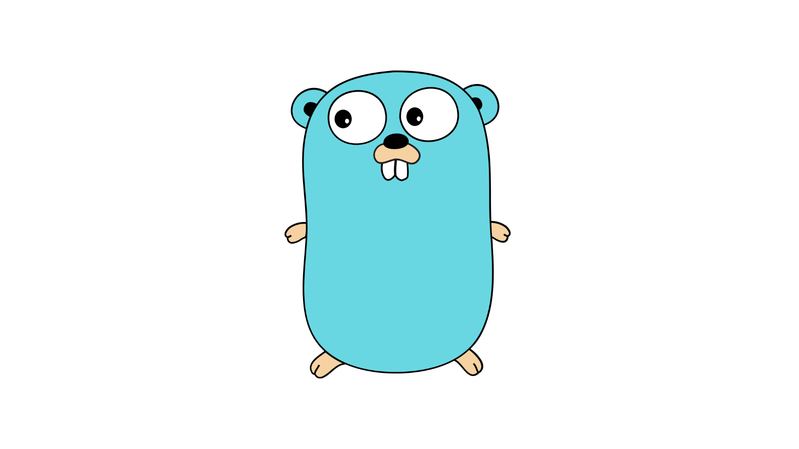

I make a lot of things in JavaScript. I do not need to elaborate how powerful and necessary JavaScript is for the world. But when I want to do something where speed matters or where I care about configuring the nitty-gritty details, I use C++. I have been writing in C++ for a while now. It was my first programming language. I have had fun with it. I am far from being an expert in it but I am not afraid to get my hands dirty in C++. I have built some command-line tools, have done some academic work with it, and have used it (still using it) for programming competitions.
This personal system of using C++ and JavaScript worked well until I started to realize that C++ is often very complicated and messy. The thing is, it should not be like that, at least in 2021. The development speed should not be hindered with things that could automatically be handled by the compiler or the runtime. So I decided to look outside C++ after over 2 years of its usage.
I needed a language that can help me build CLI tools, that provides type-safety, is fast and the development process is smooth in it. I tried exploring Rust as there is talk all over the Internet that Rust has the potential to replace C++. My problem with Rust is the steep learning curve. This is not an uncommon problem. Many people share this opinion and choose to stay away from Rust, even after it being a seemingly fine language to write operating systems or video games. Next, I tried my hands at Go.
Go is a garbage collected, statically typed, compiled programming language. Its philoshopy is to stay clean, concise and efficient.

I started learning about Go from the official docs. Meanwhile, I discovered this website that provides an introduction to various topics of Go with an example. This website is pretty good and you should check it out if you are new to Go or maybe just want to revise your learnings. It was not hard to pick it up. I have been able to stay very productive while using it. I am still exploring some of its concepts but I like it. The concept of using goroutines and communicating via channels makes it fairly easy to write code for systems that need concurrency.
hello and maketest are some of the open-source tools that I have built using Go. If you are learning this language, you should also look into the topic of concurrency vs parallelism. It also has a good set of tools that help in the software development process. There is even a standard, opinionated way to format your Go code which puts me in a position to just focus on writing code and let the formatter worry about how the code should look. These in-house tools make software writing fun and help in making maintainble projects in my opinion.
Lack of generics. Fortunately, this is a thing in progress. The creators of Go are working on it and we might get it in future versions. Here in India, Go seems to have a slow rate of adoption. If generics are added to Go, it would open up a wide set of possibilities. We could write a library for various generic data structures, similar to what is found in C++ STL. This would further help in Go for programming competitions and not limiting it to software development.
Here in India, Go has a slow adoption rate. In my opinion, Go is a good candidate for building CLIs, web servers, or bots. Meanwhile, I will keep learning Go and building personal tools with it. Happy programming.
Vivek